Temukan Program Les Privat Calistung, Mengaji, Matematika, Bahasa Inggris, Olimpiade Sains, Persiapan Ujian Sesuai Kebutuhan Belajar Anak di Semua Jenjang
Les privat guru datang ke rumah untuk PAUD, TK, SD, SMP, SMA, hingga persiapan UTBK & Olimpiade Sains.
Hasil yang Berbicara
Ribuan Keluarga Sudah Mempercayakan
Pendidikan Anak Mereka kepada Sainspiq
Bukan sekadar les biasa — setiap sesi dirancang untuk hasil yang terukur.
3.291+
SISWA LULUS
Dari PAUD hingga UTBK
2359+
TUTOR TERVERIFIKASI
Lulusan PTN terbaik Indonesia
98.5%
TINGKAT KEPUASAN
Berdasarkan survei orang tua siswa
Jaringan Tutor Unggulan
Tutor Kami Berasal Dari PTN Terbaik
Semua tutor kami adalah mahasiswa aktif atau alumni terbaik yang telah melalui seleksi ketat dan terverifikasi oleh tim akademik Sainspiq.
Univ. Indonesia
Depok, Jawa Barat
Institut Tek. Bandung
Bandung, Jawa Barat
Univ. Gadjah Mada
Yogyakarta
Univ. Padjadjaran
Bandung, Jawa Barat
Univ. Indonesia
Depok, Jawa Barat
Institut Tek. Bandung
Bandung, Jawa Barat
Univ. Gadjah Mada
Yogyakarta
Univ. Padjadjaran
Bandung, Jawa Barat
Institut Tek. Sepuluh N.
Surabaya, Jawa Timur
Univ. Airlangga
Surabaya, Jawa Timur
Univ. Diponegoro
Semarang, Jawa Tengah
Univ. Brawijaya
Malang, Jawa Timur
Institut Tek. Sepuluh N.
Surabaya, Jawa Timur
Univ. Airlangga
Surabaya, Jawa Timur
Univ. Diponegoro
Semarang, Jawa Tengah
Univ. Brawijaya
Malang, Jawa Timur
Bukti Nyata
Momen Belajar Bersama Sainspiq
Setiap sesi les adalah cerita nyata — di rumah siswa, di mana pun mereka berada. Intip suasana belajar seru yang sudah kami jalani bersama ratusan keluarga di seluruh Indonesia.

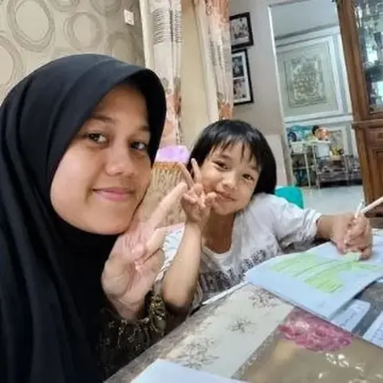
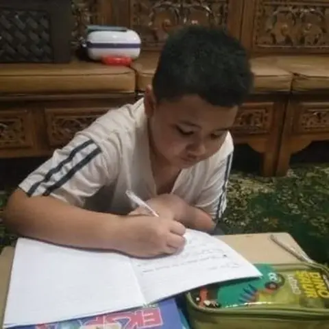
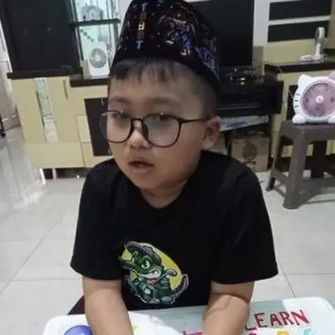
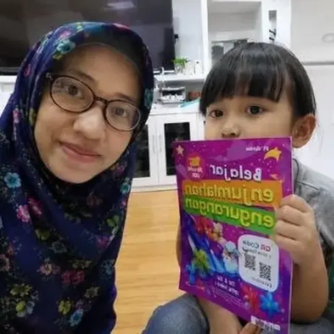
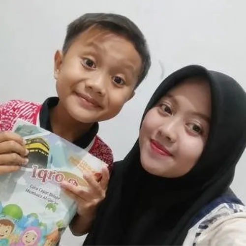
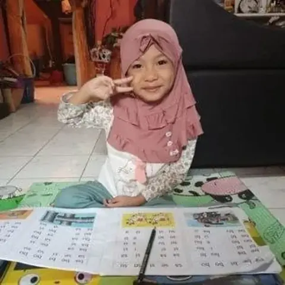
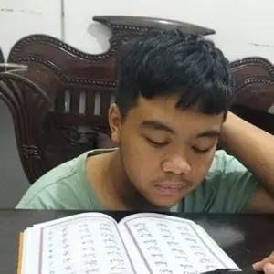
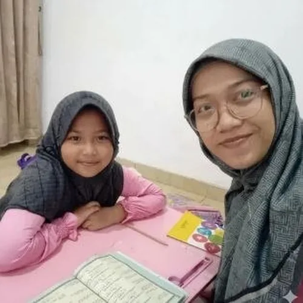
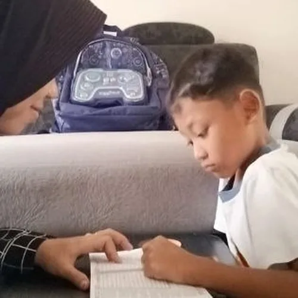
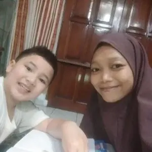
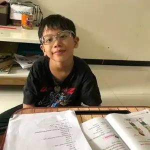
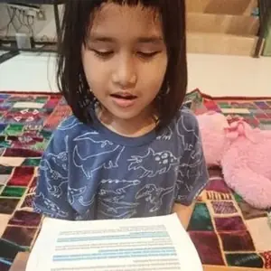
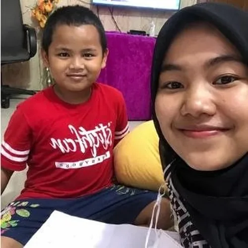
Ingin sesi belajar seperti ini untuk anak Anda?
Konsultasi GratisPilih Jenjang & Fokus Belajar
Materi yang disesuaikan dengan kurikulum nasional terbaru (K-13 & Merdeka) serta standar seleksi nasional.
PAUD & TK
Pengenalan huruf, angka, dan motorik dasar dengan pendekatan bermain yang menyenangkan & interaktif.
Sekolah Dasar (SD)
Penguatan fondasi calistung, logika matematika dasar, dan pengenalan ilmu sains sejak dini.
SMP
Fokus peningkatan nilai raport, peminatan jurusan, dan penguasaan konsep sains & matematika lebih dalam.
SMA
Penguasaan materi peminatan IPA/IPS, persiapan ujian nasional, dan fondasi akademik menuju PTN impian.
Persiapan UTBK
Drill soal TPS & Literasi. Simulasi tryout dengan sistem IRT, analisis kelemahan, dan evaluasi prodi.
Olimpiade Sains
Persiapan OSK, OSP, OSN dengan tutor spesialis peraih medali nasional maupun internasional.
Butuh rekomendasi program yang paling sesuai?
Konsultasi GratisKata Mereka
Cerita Nyata dari Orang Tua Siswa
Bukan sekadar klaim — ini percakapan WhatsApp asli dengan orang tua siswa yang sudah les bersama tutor Sainspiq.
Pertanyaan Umum
Masih Ada yang Ingin Ditanyakan?
Berikut jawaban atas pertanyaan yang paling sering diajukan orang tua dan siswa seputar les privat Sainspiq.